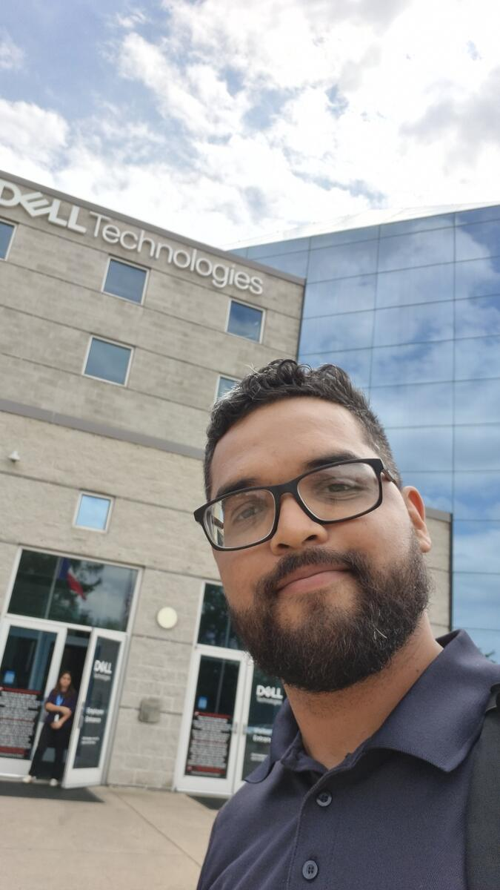
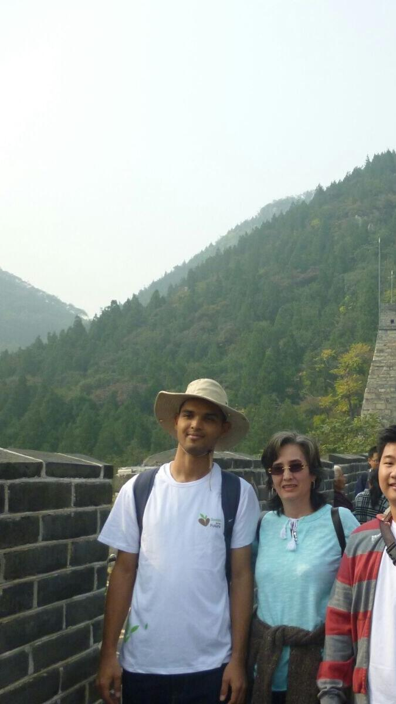
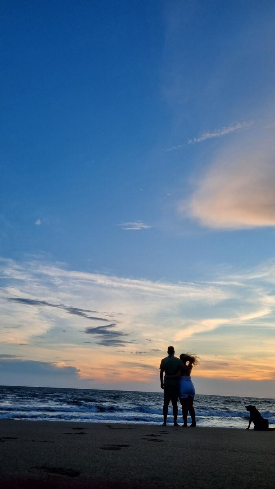

14 Nov 2026
Spec, agente, prueba, deploy: un solo dev, 3 plataformas
AmalIA Conf 2026 · Ciudad de Panamá
View the slidesSenior Software Engineer at Dell Technologies.
Certified and passionate about software engineering, distributed systems and how complex systems work. As a Data Engineering Advisor, I build automation and AI integrations for marketing operations.
A space for your thoughts.
A place of your own.
I’m building Sello, a private, encrypted journal for Android, iPhone, and the web.
Made by Voypalante.
Explore Sello14 Nov 2026
AmalIA Conf 2026 · Ciudad de Panamá
View the slidesApr 2024
2018
2016
Ongoing


